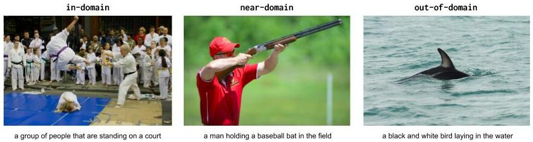

UpDown Captioner Baseline for nocaps¶
Baseline model for nocaps benchmark, a re-implementation based on the UpDown image captioning model trained on the COCO dataset (only).
Get the source at @nocaps-org/updown-baseline.
If you find this code useful, please consider citing:
@article{nocaps,
author = {Harsh Agrawal* and Karan Desai* and Yufei Wang and Xinlei Chen and Rishabh Jain and
Mark Johnson and Dhruv Batra and Devi Parikh and Stefan Lee and Peter Anderson},
title = {{nocaps}: {n}ovel {o}bject {c}aptioning {a}t {s}cale},
journal = {arXiv preprint arXiv:1812.08658},
year = {2018},
}
As well as the paper that proposed this model:
@inproceedings{Anderson2017up-down,
author = {Peter Anderson and Xiaodong He and Chris Buehler and Damien Teney and Mark Johnson
and Stephen Gould and Lei Zhang},
title = {Bottom-Up and Top-Down Attention for Image Captioning and Visual Question Answering},
booktitle = {CVPR},
year = {2018}
}